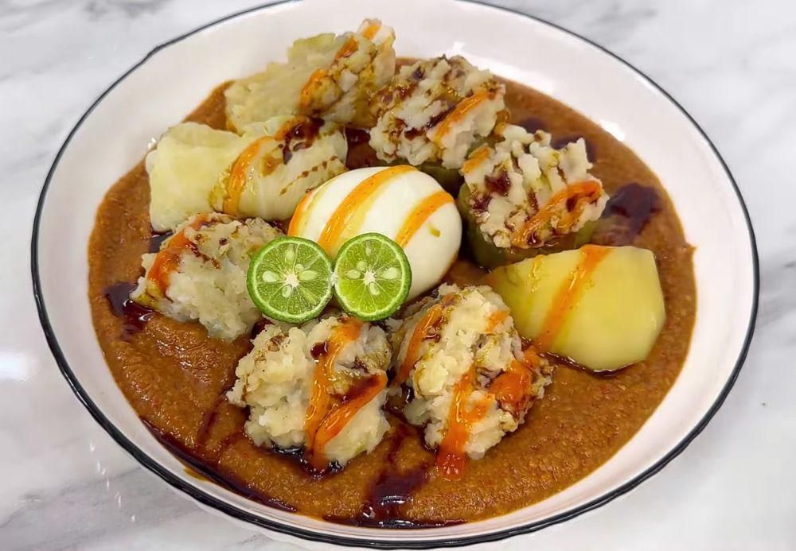

Bahan-bahan:
- 250 gram daging ayam giling
- 100 gram ikan tenggiri giling
- 100 gram tepung tapioka
- 2 siung bawang putih halus
- 1 butir telur
- Garam, gula, dan lada secukupnya
- Kol, tahu, kentang, pare, dan telur rebus untuk pelengkap
Langkah-langkah:
- Campur daging ayam, ikan, tepung tapioka, bawang putih, telur, dan bumbu hingga rata.
- Bentuk adonan sesuai selera, bisa isi ke tahu atau pare.
- Kukus selama 30–40 menit sampai matang.
- Sajikan siomay dengan saus kacang dan kecap manis.
Tips:
Gunakan ikan segar agar aroma siomay lebih lezat. Saus kacang bisa dibuat dari kacang tanah goreng, cabai, gula, dan air hangat.
Ingin Membeli Siomay?
Isi form di bawah ini untuk memesan siomay lezat buatan Anika 🍽️